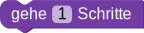

Die Schildkröte soll den hellgrauen Strich zeichnen.
Bei dem Baustein  kannst du angeben, wie viele Schritte die Schildkröte geradeaus gehen soll.
Mit der Funktion geheSchritte() kannst du der Schildkröte
den Befehl geben geradeaus zu gehen.
Die Funktion erwartet einen Paramter der angibt, wie viele Schritte sie geradeaus gehen soll.
Den Paramter übergeben wir der Funktion, indem wir ihn in die runden Klammern schreiben.
Hinweis: Wie in vielen Programmiersprachen werden hier Kommazahlen mit einem Punkt statt mit einem Komma angegeben.